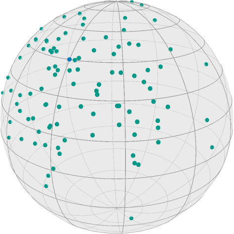
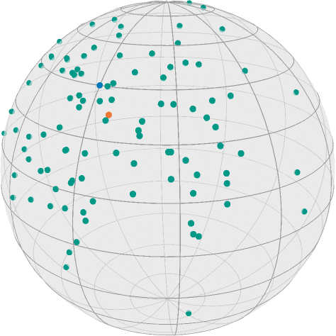

Getting Started: Optimize!
This example illustrates how to set up and solve optimization problems and how to further get data from the algorithm using DebugOptions and RecordOptions
To start from the quite general case: A Solver is an algorithm that aims to solve
where $\mathcal M$ is a Manifold and $f\colon\mathcal M \to \mathbb R$ is the cost function.
In Manopt.jl a Solver is an algorithm that requires a Problem p and Options o. While former contains static data, most prominently the manifold $\mathcal M$ (usually as p.M) and the cost function $f$ (usually as p.costFunction), the latter contains dynamic data, i.e. things that usually change during the algorithm, are allowed to change, or specify the details of the algorithm to use. Together they form a plan. A plan uniquely determines the algorithm to use and provide all necessary information to run the algorithm.
Example
A gradient plan consists of a GradientProblem with the fields M, cost function $f$ as well as gradient storing the gradient function corresponding to $f$. Accessing both functions can be done directly but should be encapsulated using getCost(p,x) and getGradient(p,x), where in both cases x is an MPoint on the Manifold M. Second, the GradientDescentOptions specify that the algorithm to solve the GradientProblem will be the gradient descent algorithm. It requires an initial value o.x0, a StoppingCriterion o.stop, a Stepsize o.stepsize and a retraction o.retraction and it internally stores the last evaluation of the gradient at o.∇ for convenience. The only mandatory parameter is the initial value x0, though the defaults for both the stopping criterion (stopAfterIteration(100)) as well as the stepsize (ConstantStepsize(1.) are quite conservative, but are chosen to be as simple as possible.
With these two at hand, running the algorithm just requires to call xOpt = solve(p,o).
In the following two examples we will see, how to use a higher level interface that allows to more easily activate for example a debug output or record values during the iterations
The given Dataset
using Manopt
using Random, ColorsFor a persistent random set we use
n = 100
σ = π/8
M = Sphere(2)
x = SnPoint(1/sqrt(2)*[1., 0., 1.])
Random.seed!(42)
data = addNoise.(Ref(M), repeat([x],n),Ref(σ))and we define some colors from Paul Tol
black = RGBA{Float64}(colorant"#000000")
TolVibrantOrange = RGBA{Float64}(colorant"#EE7733")
TolVibrantBlue = RGBA{Float64}(colorant"#0077BB")
TolVibrantTeal = RGBA{Float64}(colorant"#009988")
TolVibrantMagenta = RGBA{Float64}(colorant"#EE3377")Then our data looks like
asyResolution = 2renderAsymptote("startDataAndCenter.asy",asyExportS2Signals;
render = asyResolution,
points = [ [x], data],
colors=Dict(:points => [TolVibrantBlue, TolVibrantTeal]),
dotSize = 3.5, cameraPosition = (1.,.5,.5)
)
Computing the Mean
To compute the mean on the manifold we use the characterization, that the Euclidean mean minimizes the sum of squared distances, and end up with the following cost function. Its minimizer is called Riemannian Center of Mass.
F = y -> sum(1/(2*n) * distance.(Ref(M),Ref(y),data).^2)
∇F = y -> sum(1/n*gradDistance.(Ref(M),data,Ref(y)))note that the gradDistance defaults to the case p=2, i.e. the gradient of the squared distance. For details on convergence of the gradient descent for this problem, see [Afsari, Tron, Vidal, 2013]
The easiest way to call the gradient descent is now to call steepestDescent
xMean = steepestDescent(M,F,∇F,data[1])but in order to get more details, we further add the debug= options, which act as a decorator pattern using the DebugOptions and DebugActions. The latter store values if that's necessary, for example for the DebugChange that prints the change during the last iteration. The following debug prints
# i | x: | Last Change: | F(x):`
as well as the reason why the algorithm stopped at the end. Here, the format shorthand and the [DebugFactory] are used, which returns a DebugGroup of DebugAction performed each iteration and the stop, respectively.
xMean = steepestDescent(M,F,∇F,data[1];
debug = [:Iteration," | ", :x, " | ", :Change, " | ", :Cost, "\n", :Stop]
)Initial | x: Sn([0.573734, -0.172865, 0.800592]) | | F(x): 0.22606088442202962
# 1 | x: Sn([0.782389, 0.085569, 0.616884]) | Last Change: 0.38188652881305785 | F(x): 0.1492472828108876
# 2 | x: Sn([0.791738, 0.0972092, 0.603077]) | Last Change: 0.020335997468975846 | F(x): 0.14902948995714208
# 3 | x: Sn([0.792283, 0.097716, 0.602278]) | Last Change: 0.001092107177198496 | F(x): 0.14902886086292977
# 4 | x: Sn([0.792316, 0.0977379, 0.602232]) | Last Change: 6.034189486653822e-5 | F(x): 0.14902885894006085
# 5 | x: Sn([0.792317, 0.0977388, 0.602229]) | Last Change: 3.405428846127275e-6 | F(x): 0.14902885893393106
# 6 | x: Sn([0.792318, 0.0977389, 0.602229]) | Last Change: 1.9428737179048833e-7 | F(x): 0.149028858933911
# 7 | x: Sn([0.792318, 0.0977389, 0.602229]) | Last Change: 0.0 | F(x): 0.14902885893391096
The algorithm reached approximately critical point; the gradient norm (6.549991892754451e-10) is less than 1.0e-8.renderAsymptote("startDataCenterMean.asy",asyExportS2Signals;
render = asyResolution,
points = [ [x], data, [xMean] ],
colors=Dict(:points => [TolVibrantBlue, TolVibrantTeal, TolVibrantOrange]),
dotSize = 3.5, cameraPosition = (1.,.5,.5)
)
Computing the Median
Similar to the mean you can also define the median as the minimizer of the distances, see for example [Bačák, 2014], but since this problem is not differentiable, we employ the Cyclic Proximal Point (CPP) algorithm, described in the same reference. We define
F2 = y -> sum( 1/(2*n) * distance.(Ref(M),Ref(y),data))
proxes = Function[ (λ,y) -> proxDistance(M,λ/n,di,y,1) for di in data ]where the Function is a helper for global scope to infer the correct type.
We then call the cyclicProximalPoint as
xMedian, values = cyclicProximalPoint(M,F2,proxes,data[1];
debug = [:Iteration," | ", :x, " | ", :Change, " | ", :Cost, "\n", 50, :Stop],
record = [:Iteration, :Change, :Cost]
)Initial | x: Sn([0.573734, -0.172865, 0.800592]) | | F(x): 0.2986800792881026
# 50 | x: Sn([0.790207, 0.0790575, 0.607719]) | Last Change: 0.024872284599065892 | F(x): 0.24545404985253558
# 100 | x: Sn([0.790176, 0.0789142, 0.607778]) | Last Change: 0.00015168198899823736 | F(x): 0.24545402494915822
# 150 | x: Sn([0.790164, 0.0788666, 0.6078]) | Last Change: 5.238563566485724e-5 | F(x): 0.24545402020641963
# 200 | x: Sn([0.790157, 0.0788428, 0.607812]) | Last Change: 2.648767643184091e-5 | F(x): 0.2454540185347789
# 250 | x: Sn([0.790153, 0.0788287, 0.607819]) | Last Change: 1.5975504268680515e-5 | F(x): 0.2454540177590461
# 300 | x: Sn([0.790151, 0.0788192, 0.607824]) | Last Change: 1.0681066695042033e-5 | F(x): 0.2454540173372077
# 350 | x: Sn([0.790149, 0.0788125, 0.607827]) | Last Change: 7.642872252139065e-6 | F(x): 0.245454017082742
# 400 | x: Sn([0.790147, 0.0788075, 0.60783]) | Last Change: 5.73880456603777e-6 | F(x): 0.2454540169175623
# 450 | x: Sn([0.790146, 0.0788035, 0.607832]) | Last Change: 4.467068899786066e-6 | F(x): 0.24545401680431816
# 500 | x: Sn([0.790145, 0.0788004, 0.607833]) | Last Change: 3.5756577509035908e-6 | F(x): 0.24545401672332376
# 550 | x: Sn([0.790144, 0.0787979, 0.607835]) | Last Change: 2.926703380869698e-6 | F(x): 0.24545401666340602
# 600 | x: Sn([0.790144, 0.0787957, 0.607836]) | Last Change: 2.439789287793762e-6 | F(x): 0.24545401661784128
# 650 | x: Sn([0.790143, 0.0787939, 0.607837]) | Last Change: 2.0649805308965548e-6 | F(x): 0.24545401658238772
# 700 | x: Sn([0.790143, 0.0787924, 0.607838]) | Last Change: 1.7701676374577805e-6 | F(x): 0.2454540165542612
# 750 | x: Sn([0.790142, 0.0787911, 0.607838]) | Last Change: 1.5343131692766127e-6 | F(x): 0.24545401653157428
The algorithm performed a step with a change (0.0) less than 1.0e-12.where the differences to steepestDescent are as follows
- the third parameter is now an Array of proximal maps
- debug is reduces to only every 50th iteration
- we further activated a
RecordActionusing therecord=optional parameter. These work very similar to those in debug, but they collect their data in an array. The high level interface then returns two variables; thevaluesdo contain an array of recorded datum per iteration. Here a Tuple containing the iteration, last change and cost respectively; seeRecordGroup,RecordIteration,RecordChange,RecordCostas well as theRecordFactoryfor details. Thevaluescontains hence a tuple per iteration, that itself consists of (by order of specification) the iteration number, the last change and the cost function value.
These recorded entries read
values795-element Array{Tuple{Int64,Float64,Float64},1}:
(1, 0.36238005253323424, 0.245641044732753)
(2, 0.01809306050631564, 0.24547241697343175)
(3, 0.004524562287640276, 0.24545924567218239)
(4, 0.0016977276677696115, 0.2454567202442458)
(5, 0.0008065520445980736, 0.2454558352426111)
(6, 0.00045408132637338595, 0.2454553806689513)
(7, 0.00029150358326490163, 0.24545509464651913)
(8, 0.00020667645140366966, 0.24545489511003585)
(9, 0.00015736137044969613, 0.2454547477323262)
(10, 0.00012587009545694195, 0.24545463490344233)
⋮
(787, 2.9802322387695312e-8, 0.24545401651749799)
(788, 2.580956827951785e-8, 0.24545401651714466)
(789, 2.580956827951785e-8, 0.24545401651679308)
(790, 2.9802322387695312e-8, 0.24545401651644255)
(791, 2.580956827951785e-8, 0.2454540165160933)
(792, 2.1073424255447017e-8, 0.2454540165157455)
(793, 2.1073424255447017e-8, 0.24545401651539903)
(794, 1.4901161193847656e-8, 0.24545401651505386)
(795, 0.0, 0.24545401651470997) The resulting median and mean for the data hence are
renderAsymptote("startDataCenterMean.asy",asyExportS2Signals;
render = asyResolution,
points = [ [x], data, [xMean], [xMedian] ],
colors=Dict(:points => [TolVibrantBlue, TolVibrantTeal, TolVibrantOrange, TolVibrantMagenta]),
dotSize = 3.5, cameraPosition = (1.,.5,.5)
)Literature
- [Bačák, 2014]
Bačák, M:
Computing Medians and Means in Hadamard Spaces. , SIAM Journal on Optimization, Volume 24, Number 3, pp. 1542–1566, doi: 10.1137/140953393, arxiv: 1210.2145. - [Afsari, Tron, Vidal, 2013]
Afsari, B; Tron, R.; Vidal, R.:
On the Convergence of Gradient Descent for Finding the Riemannian Center of Mass , SIAM Journal on Control and Optimization, Volume 51, Issue 3, pp. 2230–2260. doi: 10.1137/12086282X, arxiv: 1201.0925